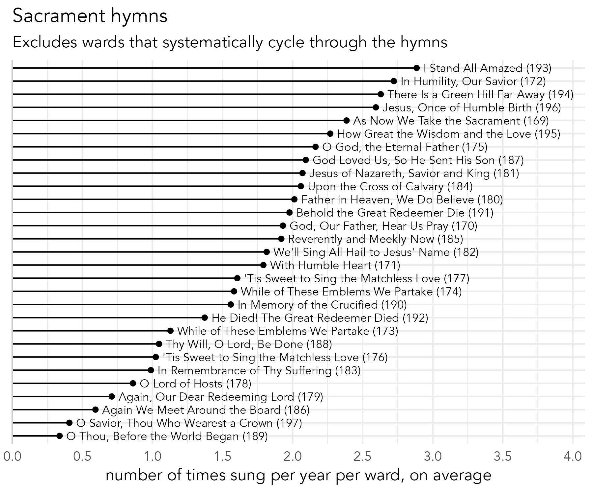
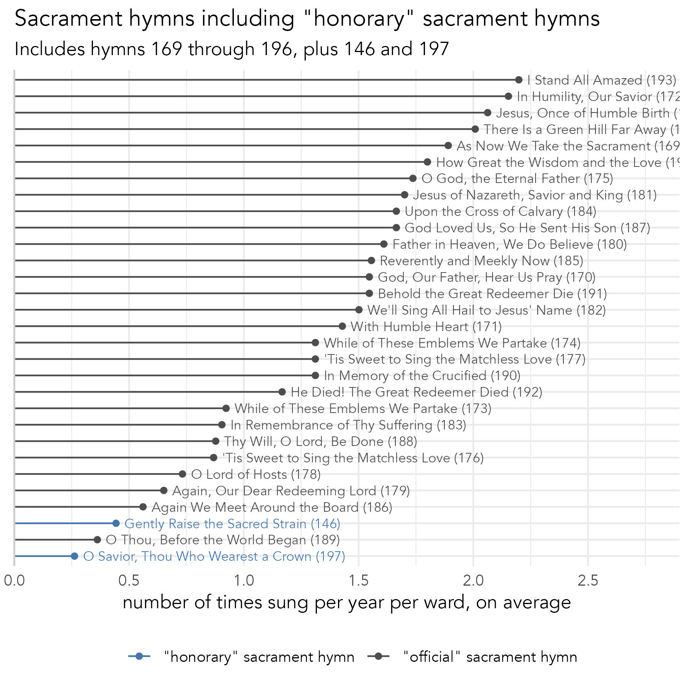

Findings
Most and least common hymns
The most common hymn is I Stand All Amazed (193). It is sung, on average, once every four and a half months within a given ward. It should come as no surprise that this hymn is a sacrament hymn, or rather, the second hymn sung in sacrament meeting and the one just before the blessing and passing of the sacrament. In fact, because we almost always sing one of 28 sacrament hymns every week, those hymns are going to be more common than most other hymns. So, to fully appreciate the most common hymns, let’s first talk about the sacrament hymns by themselves. We’ll then move on to the most frequent non-sacrament hymns. We’ll then move down the line to less and less frequent hymns until we get to the ones that are hardly sung at all. We’ll also take a tangent into the men’s and women’s arrangements in the back of the hymnal.
Sacrament hymns
We’ll start off by looking at sacrament hymns, or rather, the hymn sung immediately before the sacrament is blessed and passed to the congregation. As far as I can tell, §19.3.2 of the General Handbook has the only instruction about sacrament hymns, and it says that “[t]he sacrament hymn should refer to the sacrament itself or to the sacrifice of the Savior.” This instruction is repeated on page 380 of the hymnal.
In the hymnal, sacrament hymns go from 169 (As Now We Take the Sacrament) to 196 (Jesus, Once of Humble Birth), at least according to the Table of Contents. As far as I can tell, it doesn’t specifically state that the sacrament hymn must be one of the 28 within that range, but I think it’s a generally accepted that that’s what that phrase from the handbook means.
As it turns out, I Stand All Amazed (193) is part of that group. So it should come as no surprise that a sacrament hymn is the most common hymn overall. That one in particular focuses less on the sacrament itself and more on the Atonement, so it could be used outside of sacrament contexts without feeling out of place. In fact, a quick look at the numbers suggests that it was, in fact, sung as opening and closing hymns at least three times more often than any other sacrament hymn. This may explain why it stands out as the most commonly sung hymn in sacrament meetings.
Frequency
Let’s take a closer look at the sacrament hymns themselves. In theory, if a ward were to systematically cycle through all the sacrament hymns, they’d make it through all of them in a little over six months. However, Figure 1 shows that they’re definitely not all sung equally as often as each other.

Joining I Stand All Amazed (193) as the most common ones are In Humility, Our Savior (172), There is a Green Hill Far Away (194), and Jesus, Once of Humble Birth (196). Each one of these is sung around two or three times per year, on average, or once every four to five months.
Most sacrament hymns are sung at least once a year per ward, on average, but there were some that were less common. O Lord of Hosts (178), Again, Our Dear Redeeming Lord (179), and Again, We Meet around the Board (186) each averaged somewhere between once every 13 and 17 months. The least frequent sacrament hymn though was O Thou, Before the World Began (189), showing up about once every two years.
Also, keep in mind that some wards in this dataset do in fact systematically cycle through all the sacrament hymns. I recalculated the numbers without those wards (Figure 2), and the common hymns were slightly more frequent and the uncommon ones were even rarer. For example, O Thou, Before the World Began (189) jumped down from once every two years to once every three years.

Non-sacrament hymns
Once in a while, a ward will indeed sing some other hymn as a sacrament hymn. Many hymns were selected by at least one ward at least one time, but two stood out. They are O Savior, Thou Who Wearest a Crown (197) and Gently Raise the Sacred Strain (146) (Figure 3). There is good reason for why these two were sung as sacrament hymns: if you look up “Sacrament” in the topical index in the back of the hymnal, it is a list of all the hymns from 169–196, but it also includes these two.

Let’s start with O Savior, Thou Who Wearest a Crown (197). It was sung as a sacrament hymn about once every four years per ward on average. Given that it feels like a sacrament hymn and like an Easter hymn, it is perfectly placed between the more on-the-nose sacrament hymns (i.e. those about the bread and water) and the more traditional Easter hymns (e.g. He is Risen! (199)). Perhaps some music chairpeople noticed it in the Index and chose it because of that. But, I could see a music chairperson selecting it because they perhaps thought sacrament hymns went from 169–197 instead of 169–196.
The oddball though is Gently Raise the Sacred Strain (146). In fact, it was sung as a sacrament hymn about once every two years per ward, which is just about as often as O Thou, Before the World Began (189). It is not clear to me why this one is listed in the index as a sacrament hymn, but it’s not grouped together with the other sacrament hymns. The “Prayer and Supplication” category of hymns, which is what this is a part of (and rightfully so, in my opinion), is just before the “Sacrament” category. If it, like O Savior, Thou Who Wearest a Crown (197), fits into both categories, then I think it should be moved to hymn 168 so that it’s less out of left field. This one really should be thought of as an honorary sacrament hymn. Perhaps we’ll see it included in the “official” list of sacrament hymns in the next hymnal.
Sacrament hymns sung elsewhere
Finally, we can look at sacrament hymns that were sung at some other point in a sacrament meeting. Unsurprisingly, I Stand All Amazed (193) is at the top, being sung occasionally as an opening hymn and closing hymn. At only once every 6–7 years, it’s not particularly common to see it sung this way, but it’s still not unheard of. After that, there are a few others like Behold the Great Redeemer Die (191) and There Is a Green Hill Far Away (194) were also used as one of the other hymns, but it was still quite unusual.
Overall, while singing a specific sacrament hymn elsewhere in the meeting is pretty unusual, the odds of singing any of the sacrament hymns is more common since their frequencies add together. It happened in 61 of the 5211 sacrament meetings I have data from, or 1.1% of them. That means, on average, a ward might since hymn 169–196 at some other point in the meeting approximately once every year and ten months.
Conclusion
The findings in this section suggest that were have a strong tradition of singing hymns 169 through 196 in our sacrament meetings immediately before the sacrament itself. Some wards systematically cycle through them, which I believe is a perfectly appropriate thing to do to include the widest variety of hymns to the ward. Other wards pick and choose, which inevitably leads to some favorites being sung more and some lesser-known ones falling through the cracks.
As we’ll see in Section 2 when we look at holidays, wards do not always stick to the table of contents at the beginning of the hymnal when choosing appropriate hymns. However, in the case of the sacrament—which is the most important part of our Sunday worship and the primary reason for Sunday gatherings—it’s clear that we adhere strongly to the recommendation. Nevertheless, the addition of Gently Raise the Sacred Strain (146) shows that there is at least some room for thinking out of the box when selecting sacrament hymns.
The most common (non-sacrament) hymns
Stay tuned!
Lesser common sacrament hymns
Stay tuned!
Men’s and women’s arrangements
Stay tuned!
The least sung hymns
Stay tuned!
Holidays
Christmas
Stay tuned!
New Year’s
Stay tuned!
Valentine’s Day
Stay tuned!
Easter
Stay tuned!
Mother’s Day
Stay tuned!
Father’s Day
Stay tuned!
Fourth of July
Stay tuned!
Pioneer Day
Stay tuned!
Halloween
Stay tuned!
Thanksgiving
Stay tuned!
General Conference
Stay tuned!
Fast Sunday
Stay tuned!